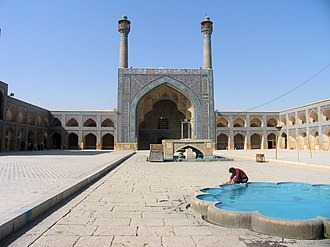

Ulu cami, cuma camisi (Arapça: مَسْجِد جَامِع, romanize: mescid cami) veya câmi-i kebîr (جامع كبير), cuma namazına ev sahipliği yapan bir camidir.[1] Yakınlarda namaz kılacak musalla bulunmadığı durumlarda da bayram namazlarını kıldırabilir. Erken İslam tarihinde, bir şehirdeki ulu camilerinin sayısı katı bir şekilde sınırlıydı. Zamanla şehirler ve nüfus arttıkça, birçok caminin aynı bölgede cuma namazı kılması daha yaygın hale geldi.
Bursa Ulu Cami, Osmanlı Sultanı I. Bayezid tarafından Niğbolu Seferi’nden dönüşünde verdiği emir ile inşa ettirilmiştir. Caminin yapım tarihini veren bir kitabe yoktur; ancak minber kapısında geçen 802 (1399) tarihi caminin inşa tarihi olarak kabul edilir.[1]
Bursa Ulu Cami’nin inşası; hem devletin kendisini siyasal, ekonomik ve kültürel bir varlık olarak dünyaya kabul ettirme çabasının bir devamı hem de Osmanlı toplumuna bir kimlik verme çabasının gereği olarak değerlendirilir.[2] Caminin açılışında ilk hutbeyi dönemin önemli mutasavvıflarından biri olan Somuncu Baba’nın okuduğu rivayet olunur.[2]
Cami yapıldığı dönemlerde toplum tarafından çok itibarlı addedilmiş ve diğer medreselerin hocaları burada ders vermeyi bir şeref bilmiştir.[2] Sonraki yüzyıllarda caminin iç mekânını süsleyen ve alışılmışın dışında büyük ebatlı yazılar toplumsal ilgi ve itibarın nedenlerinden biri olmuştur.[2]
İnşasından kısa bir süre sonra Yıldırım Bayezid’in Ankara Savaşı’nda esir düşmesinin ardından Timur’un Bursa’yı işgali sırasında ve Fetret Devri’nde Karamanoğlu Mehmed Bey’in Bursa kuşatmasında (1413) cami, dış cephelerine odun yığılarak yakılmaya çalışıldı. Bu yangınlar sonucu dış cephe kaplaması tahrip oldu. Ortaya çıkan moloz duvar dokusu kalın sıva ile örüldü; bu durum 1950’lerdeki restorasyona kadar böyle devam etti.[2] 1958 Büyük Çarşı yangınında kuzey avlusunun da yanmasından sonra gördüğü tadilat sırasında sıva kaldırılmıştır.
